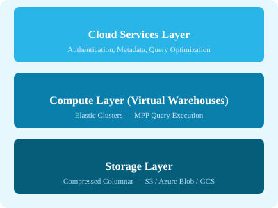

← Back to Tutorials

Snowflake Tutorial: A Complete Guide
A comprehensive guide to Snowflake — from architecture and editions to warehouses, tables, data loading, queries, monitoring, and external integrations. Each chapter includes explanations, SQL examples, diagrams, and hands-on exercises.
Table of Contents
1. Home Overview, key features, course strategy 2. Introduction What is Snowflake, cloud DW, use cases 3. Data Architecture Storage, compute, cloud services layers 4. Functional Architecture Query processing, caching, concurrency 5. How to Access Web UI, CLI, drivers, connectors, APIs 6. Editions Standard, Enterprise, Business Critical, Virtual Private 7. Pricing Model Compute, storage, cloud services, credits 8. Core Objects Databases, schemas, tables, views, stages, functions 9. Table & View Types Standard, transient, temporary, views, materialized views 10. Login & Setup Account creation, initial configuration, roles 11. Virtual Warehouse Create, resize, suspend, auto-scaling, multi-cluster 12. Database Create, clone, drop, database-level operations 13. Schema Create, manage, schema-level objects 14. Table & Columns Data types, DDL, column properties, constraints 15. Loading Data COPY INTO, stages, file formats, validation 16. Useful Queries SQL patterns, time travel, sampling, metadata 17. Monitoring Usage Account usage views, warehouse metrics, storage 18. Caching Result cache, warehouse cache, metadata cache 19. Unload to Local COPY INTO location, export formats, compression 20. Load from S3 External stages, AWS integration, IAM roles 21. Unload to S3 External unloading, partitioned exports 22. Resources Quick guide, useful references, selected reading 23. Quick Guide Command reference, cheatsheet 24. Useful Resources Documentation, community, tools 25. Discussion Q&A, community, further learning 26. Appendix Best practices, resume builder, HR interview prep, glossary 27. Bonus Who's who in Snowflake ecosystem
Start Learning →